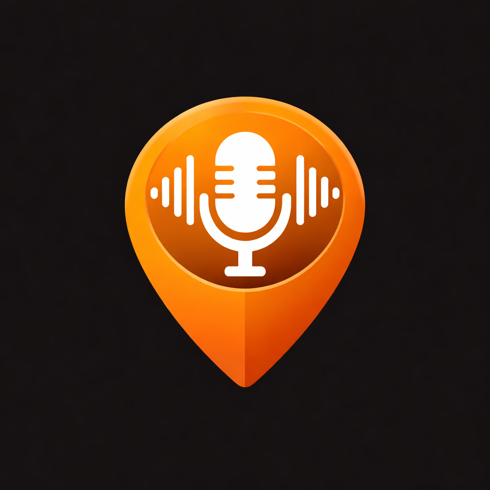

Almost there
This link finishes connecting your Meta glasses to Urban Tales. Open it on the phone where Urban Tales is installed, or go back to the Urban Tales app.

This link finishes connecting your Meta glasses to Urban Tales. Open it on the phone where Urban Tales is installed, or go back to the Urban Tales app.